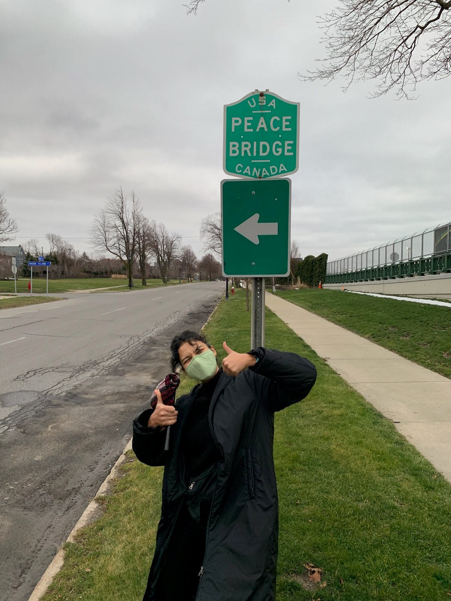

Juliet Nelson works with digital photography and traditional craft
mediums with emphasis on exemplifying environmental awareness and
sustainable consumption in both processes and objects. Nelson uses
digital microscopic photography of natural compounds to uncover patterns
and designs, finding relationships between the world we cannot see,
buried under the label waste, and the world we seek out through
aestheticism and consumption. Existing only digitally, these pieces are
the most accessible, and the most illusive. Without titles the
photographs could be anything, but that is the beauty of nature her
photographs evoke. Creating aesthetically appealing digital photographs
and documentation of her work, Nelson acknowledges the capital that
beauty has in today’s society. Using it to introduce her experience of
nature and ideas of reuse for any viewer participating in capitalism.
Her physical work uses paper making and sculpture to repurpose consumed
materials for the ecological installation “Relife”.
Five wine bottles, cotton clothing line, recycled paper, and Smallhold’s
blue oyster mushroom mycelium block creates an herbal ecosystem complete
with gnats, fruiting mushrooms, and growing herbs. In a similar process
Nelson used paper packaging and flowers from her family’s wholesale
flower farm to bring attention to the consumption of cut flowers. Energy
is used to grow flowers that only provide visual stimulation, until they
are thrown away and replaced; a cycle of death that contributes to
climate change while her family benefits. This source of contention for
her is why she acknowledges the necessary participation in capitalism,
but also the necessary understanding of its shortcomings and detriments.
Nelson’s work is one way to avoid a total destruction for the sake of
capitalism as she is pro ethical and sustainable consumption. It is
possible to make a greener world through art.